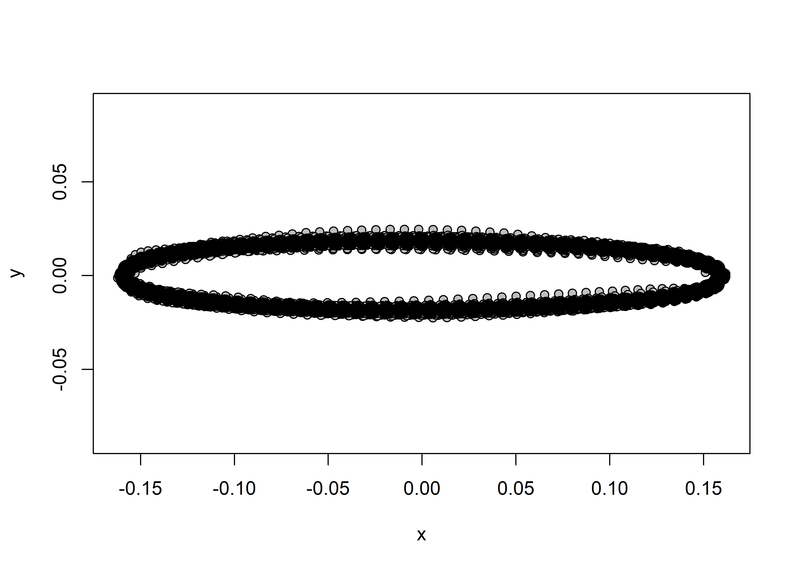
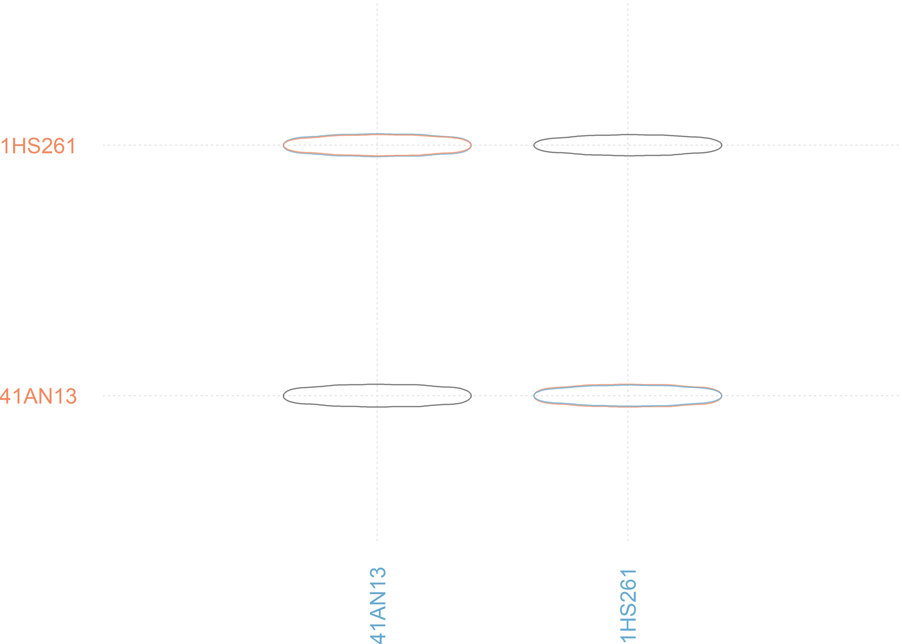
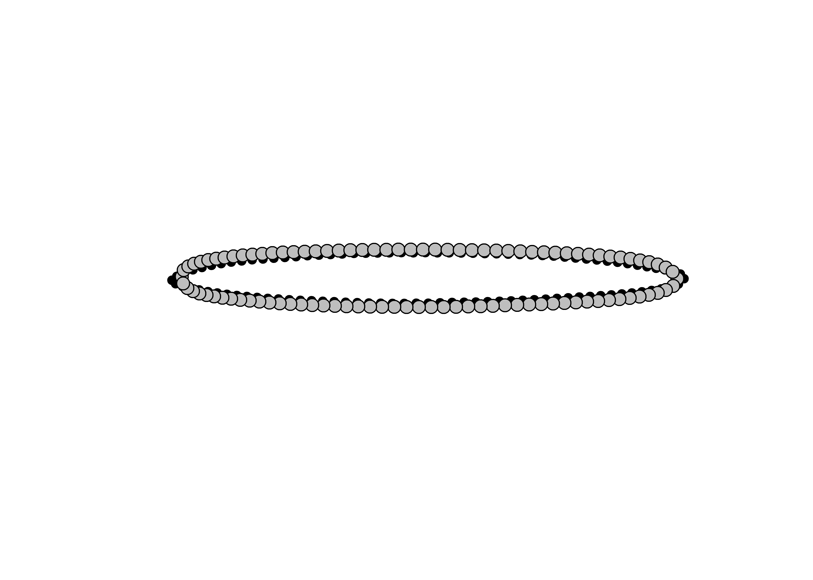

Chapter 2 Geometric morphometrics
2.1 Load packages + data
# load required analysis packages
library(here)
library(StereoMorph)
library(geomorph)
library(tidyverse)
library(wesanderson)
library(ggplot2)
# read data and define number of sLMs ----
shapes <- readShapes("shapes")
shapesGM <- readland.shapes(shapes, nCurvePts = c(50,50))
# read qualitative data
qdata <- read.csv("qdata.morph.csv",
header = TRUE,
row.names = 1)2.2 Generalised Procrustes Analysis
# gpa ----
Y.gpa <- gpagen(shapesGM, print.progress = FALSE)
# geomorph data frame ----
gdf <- geomorph.data.frame(shape = Y.gpa$coords,
size = Y.gpa$Csize,
merged = qdata$merged)
# add centroid size to qdata
qdata$csz <- Y.gpa$Csize
# attributes for boxplot
csz <- qdata$csz # centroid size
site <- qdata$site # site
# boxplot of Jowell knife centroid size by site ----
csz.site <- ggplot(qdata, aes(x = merged, y = csz, color = merged)) +
geom_boxplot() +
geom_dotplot(binaxis = 'y', stackdir = 'center', dotsize = 0.3) +
scale_colour_manual(values = wes_palette("Moonrise2")) +
theme(legend.position = "none") +
labs(x = 'Site', y = 'Centroid Size')
# render boxplot
csz.site## Bin width defaults to 1/30 of the range of the data. Pick better value with `binwidth`.
2.3 Principal Components Analysis
# principal components analysis ----
pca<-gm.prcomp(Y.gpa$coords)
summary(pca)##
## Ordination type: Principal Component Analysis
## Centering by OLS mean
## Orthogonal projection of OLS residuals
## Number of observations: 35
## Number of vectors 34
##
## Importance of Components:
## Comp1 Comp2
## Eigenvalues 0.0005893846 0.0002562312
## Proportion of Variance 0.5135328039 0.2232551552
## Cumulative Proportion 0.5135328039 0.7367879591
## Comp3 Comp4
## Eigenvalues 0.0001945825 3.486351e-05
## Proportion of Variance 0.1695404078 3.037669e-02
## Cumulative Proportion 0.9063283669 9.367051e-01
## Comp5 Comp6
## Eigenvalues 2.283077e-05 2.039902e-05
## Proportion of Variance 1.989253e-02 1.777373e-02
## Cumulative Proportion 9.565976e-01 9.743713e-01
## Comp7 Comp8
## Eigenvalues 9.053899e-06 7.151691e-06
## Proportion of Variance 7.888693e-03 6.231293e-03
## Cumulative Proportion 9.822600e-01 9.884913e-01
## Comp9 Comp10
## Eigenvalues 3.951494e-06 3.511402e-06
## Proportion of Variance 3.442950e-03 3.059497e-03
## Cumulative Proportion 9.919343e-01 9.949938e-01
## Comp11 Comp12
## Eigenvalues 1.669871e-06 1.118780e-06
## Proportion of Variance 1.454965e-03 9.747971e-04
## Cumulative Proportion 9.964487e-01 9.974235e-01
## Comp13 Comp14
## Eigenvalues 8.840868e-07 4.867142e-07
## Proportion of Variance 7.703079e-04 4.240757e-04
## Cumulative Proportion 9.981938e-01 9.986179e-01
## Comp15 Comp16
## Eigenvalues 3.906184e-07 2.504768e-07
## Proportion of Variance 3.403472e-04 2.182413e-04
## Cumulative Proportion 9.989582e-01 9.991765e-01
## Comp17 Comp18
## Eigenvalues 2.113307e-07 1.681332e-07
## Proportion of Variance 1.841332e-04 1.464950e-04
## Cumulative Proportion 9.993606e-01 9.995071e-01
## Comp19 Comp20
## Eigenvalues 1.342370e-07 9.423121e-08
## Proportion of Variance 1.169612e-04 8.210398e-05
## Cumulative Proportion 9.996241e-01 9.997062e-01
## Comp21 Comp22
## Eigenvalues 8.369514e-08 5.521749e-08
## Proportion of Variance 7.292387e-05 4.811119e-05
## Cumulative Proportion 9.997791e-01 9.998272e-01
## Comp23 Comp24
## Eigenvalues 4.734244e-08 3.482840e-08
## Proportion of Variance 4.124963e-05 3.034610e-05
## Cumulative Proportion 9.998685e-01 9.998988e-01
## Comp25 Comp26
## Eigenvalues 2.344419e-08 2.201045e-08
## Proportion of Variance 2.042701e-05 1.917778e-05
## Cumulative Proportion 9.999192e-01 9.999384e-01
## Comp27 Comp28
## Eigenvalues 1.819884e-08 1.465394e-08
## Proportion of Variance 1.585672e-05 1.276803e-05
## Cumulative Proportion 9.999543e-01 9.999670e-01
## Comp29 Comp30
## Eigenvalues 1.252782e-08 9.388193e-09
## Proportion of Variance 1.091553e-05 8.179965e-06
## Cumulative Proportion 9.999780e-01 9.999861e-01
## Comp31 Comp32
## Eigenvalues 5.509947e-09 4.984338e-09
## Proportion of Variance 4.800836e-06 4.342871e-06
## Cumulative Proportion 9.999909e-01 9.999953e-01
## Comp33 Comp34
## Eigenvalues 3.041121e-09 2.371547e-09
## Proportion of Variance 2.649739e-06 2.066337e-06
## Cumulative Proportion 9.999979e-01 1.000000e+00# set plot parameters
pch.gps <- c(1:4)[as.factor(qdata$merged)]
col.gps <- wes_palette("Moonrise2")[as.factor(qdata$merged)]
col.hull <- c("#CCC591", "#29211F", "#798E87", "#C27D38")
# plot pca by site
pc.plot <- plot(pca,
asp = 1,
pch = pch.gps,
col = col.gps)
shapeHulls(pc.plot,
groups = qdata$merged,
group.cols = col.hull)
2.4 ANOVA
# ANOVA ----
# size
fit.sz <- procD.lm(size ~ merged,
data = gdf,
print.progress = FALSE,
iter = 9999)
anova(fit.sz)##
## Analysis of Variance, using Residual Randomization
## Permutation procedure: Randomization of null model residuals
## Number of permutations: 10000
## Estimation method: Ordinary Least Squares
## Sums of Squares and Cross-products: Type I
## Effect sizes (Z) based on F distributions
##
## Df SS MS Rsq F Z Pr(>F)
## merged 3 317.28 105.761 0.7379 29.092 6.1213 1e-04
## Residuals 31 112.70 3.635 0.2621
## Total 34 429.98
##
## merged ***
## Residuals
## Total
## ---
## Signif. codes:
## 0 '***' 0.001 '**' 0.01 '*' 0.05 '.' 0.1 ' ' 1
##
## Call: procD.lm(f1 = size ~ merged, iter = 9999, data = gdf, print.progress = FALSE)# pairwise comparison of LS means = which differ?
pw.sz <- pairwise(fit.sz,
groups = qdata$merged)
summary(pw.sz,
confidence = 0.95,
test.type = "dist")##
## Pairwise comparisons
##
## Groups: AN13_L AN13_S HS261_L HS261_S
##
## RRPP: 10000 permutations
##
## LS means:
## Vectors hidden (use show.vectors = TRUE to view)
##
## Pairwise distances between means, plus statistics
## d UCL (95%) Z Pr > d
## AN13_L:AN13_S 6.085943 4.182363 2.3154486 0.0042
## AN13_L:HS261_L 1.925142 3.490613 0.6378125 0.2816
## AN13_L:HS261_S 7.514958 3.460303 3.2703517 0.0001
## AN13_S:HS261_L 4.160801 3.697289 1.7987390 0.0260
## AN13_S:HS261_S 1.429015 3.692590 0.1602836 0.4560
## HS261_L:HS261_S 5.589816 2.831037 2.9926618 0.0001# shape
fit.sh <- procD.lm(shape ~ merged,
data = gdf,
print.progress = FALSE,
iter = 9999)
anova(fit.sh)##
## Analysis of Variance, using Residual Randomization
## Permutation procedure: Randomization of null model residuals
## Number of permutations: 10000
## Estimation method: Ordinary Least Squares
## Sums of Squares and Cross-products: Type I
## Effect sizes (Z) based on F distributions
##
## Df SS MS Rsq F Z
## merged 3 0.006360 0.0021199 0.16298 2.012 1.6912
## Residuals 31 0.032662 0.0010536 0.83702
## Total 34 0.039022
## Pr(>F)
## merged 0.0445 *
## Residuals
## Total
## ---
## Signif. codes:
## 0 '***' 0.001 '**' 0.01 '*' 0.05 '.' 0.1 ' ' 1
##
## Call: procD.lm(f1 = shape ~ merged, iter = 9999, data = gdf, print.progress = FALSE)# pairwise comparison of LS means = which differ?
pw.sh <- pairwise(fit.sh,
groups = qdata$merged)
summary(pw.sh,
confidence = 0.95,
test.type = "dist")##
## Pairwise comparisons
##
## Groups: AN13_L AN13_S HS261_L HS261_S
##
## RRPP: 10000 permutations
##
## LS means:
## Vectors hidden (use show.vectors = TRUE to view)
##
## Pairwise distances between means, plus statistics
## d UCL (95%) Z Pr > d
## AN13_L:AN13_S 0.02259987 0.03270278 0.5920542 0.2840
## AN13_L:HS261_L 0.03150646 0.02669895 2.1749117 0.0139
## AN13_L:HS261_S 0.02818601 0.02668022 1.7894766 0.0349
## AN13_S:HS261_L 0.02149886 0.02888290 0.7779671 0.2244
## AN13_S:HS261_S 0.01129906 0.02863180 -0.8657161 0.7993
## HS261_L:HS261_S 0.01732148 0.02213425 0.9255984 0.18492.5 Trajectory Analysis
# trajectory analysis::shape----
TA <- trajectory.analysis(fit.sh,
groups = qdata$site,
traj.pts = qdata$size,
print.progress = FALSE)
# magnitude difference
summary(TA,
attribute = "MD",
show.trajectories = TRUE)##
## Trajectory analysis
##
## 10000 permutations.
##
## Points projected onto trajectory PCs
##
## Trajectories:
## $AN13
## PC1 PC2 PC3 PC4
## AN13.L 0.021509873 0.006293935 -0.001300803 -1.511547e-16
## AN13.S 0.004770784 -0.007012931 0.006012485 1.539559e-16
## PC5 PC6 PC7
## AN13.L -9.506441e-17 1.437694e-16 -8.112882e-18
## AN13.S 1.269969e-16 -1.709008e-16 -4.709588e-17
## PC8 PC9 PC10
## AN13.L -1.903707e-17 1.528047e-17 4.378779e-17
## AN13.S 6.291761e-18 -9.378349e-18 6.935506e-18
## PC11 PC12 PC13
## AN13.L -1.320810e-17 -3.446566e-17 2.577310e-18
## AN13.S -2.961418e-17 -3.710693e-17 -6.993951e-18
## PC14 PC15 PC16
## AN13.L 6.026639e-18 2.818883e-17 3.811655e-18
## AN13.S -1.767419e-17 -2.284278e-17 -1.340968e-17
## PC17 PC18 PC19
## AN13.L -1.360758e-17 4.959166e-18 -3.990372e-18
## AN13.S 1.772840e-18 6.104566e-18 -1.093562e-17
## PC20 PC21 PC22
## AN13.L -5.987252e-18 3.082183e-17 -2.425521e-17
## AN13.S 1.100253e-17 -3.262347e-17 2.563429e-17
## PC23 PC24 PC25
## AN13.L 1.215958e-17 6.149671e-18 -1.062560e-17
## AN13.S 3.020519e-18 8.733757e-18 5.138102e-18
## PC26 PC27 PC28
## AN13.L -1.181823e-18 -2.387151e-18 1.006226e-18
## AN13.S 1.412004e-17 9.250447e-18 1.777770e-18
## PC29 PC30 PC31
## AN13.L 6.408651e-18 7.019786e-19 -1.983751e-18
## AN13.S -9.222495e-18 -7.838443e-18 7.165899e-19
## PC32 PC33 PC34
## AN13.L 5.041011e-18 1.356947e-18 -3.086270e-18
## AN13.S 3.606560e-18 -1.565317e-18 2.931793e-19
## PC35
## AN13.L -1.530165e-18
## AN13.S 2.037114e-19
##
## $HS261
## PC1 PC2 PC3
## HS261.L -0.009917818 0.007667661 0.0004513587
## HS261.S -0.002824945 -0.007892574 -0.0023061591
## PC4 PC5 PC6
## HS261.L -1.234538e-16 -1.287780e-16 1.590143e-16
## HS261.S 2.603794e-16 2.285655e-16 -3.068351e-16
## PC7 PC8 PC9
## HS261.L 4.822582e-18 4.314871e-17 3.438615e-17
## HS261.S 1.006614e-17 2.530087e-18 2.204319e-17
## PC10 PC11 PC12
## HS261.L 4.546958e-17 -2.482325e-17 -4.353845e-17
## HS261.S 4.395254e-18 7.774598e-17 1.185110e-17
## PC13 PC14 PC15
## HS261.L -1.773263e-18 7.443302e-18 1.561293e-17
## HS261.S 9.147956e-20 -5.196357e-17 -2.270175e-17
## PC16 PC17 PC18
## HS261.L -7.409533e-18 -4.199208e-17 -3.023749e-18
## HS261.S -2.863266e-17 9.178449e-18 2.183519e-17
## PC19 PC20 PC21
## HS261.L 2.035346e-17 1.989469e-17 -6.277361e-18
## HS261.S -3.423824e-17 -5.753471e-19 -1.094731e-16
## PC22 PC23 PC24
## HS261.L 9.007825e-18 2.012889e-17 -9.583331e-18
## HS261.S 3.221362e-17 7.640237e-19 2.431821e-17
## PC25 PC26 PC27
## HS261.L -1.405439e-17 -1.677676e-17 -4.946672e-18
## HS261.S 1.451137e-17 2.302066e-17 1.147370e-17
## PC28 PC29 PC30
## HS261.L -2.447045e-17 6.140142e-18 -2.195086e-18
## HS261.S 2.531796e-17 -2.120462e-17 -1.100190e-17
## PC31 PC32 PC33
## HS261.L -5.995723e-18 -7.189033e-18 6.601351e-18
## HS261.S 5.115232e-18 3.683958e-18 2.456396e-19
## PC34 PC35
## HS261.L 3.569450e-18 1.212083e-17
## HS261.S -1.020537e-17 -7.578827e-18
##
##
## Observed path distances by group
##
## AN13 HS261
## 0.02259987 0.01732148
##
## Pairwise absolute differences in path distances, plus statistics
## d UCL (95%) Z Pr > d
## AN13:HS261 0.005278387 0.02036483 -0.1748349 0.5729# plot
TP <- plot(TA,
pch = as.numeric(qdata$site),
bg = as.numeric(qdata$size),
cex = 0.9,
col = "gray")
add.trajectories(TP,
traj.pch = c(1,2),
traj.cex = 1)
2.6 Morphological Disparity
# morphological disparity ----
# do any of the groups display greater shape variation among
# individuals relative to the other group?
morphol.disparity(shape ~ merged,
groups = qdata$merged,
data = gdf,
print.progress = FALSE,
iter = 9999)##
## Call:
## morphol.disparity(f1 = shape ~ merged, groups = qdata$merged,
## iter = 9999, data = gdf, print.progress = FALSE)
##
##
##
## Randomized Residual Permutation Procedure Used
## 10000 Permutations
##
## Procrustes variances for defined groups
## AN13_L AN13_S HS261_L HS261_S
## 0.0020256692 0.0006126342 0.0006043884 0.0008493661
##
##
## Pairwise absolute differences between variances
## AN13_L AN13_S HS261_L HS261_S
## AN13_L 0.000000000 1.413035e-03 1.421281e-03 0.0011763030
## AN13_S 0.001413035 0.000000e+00 8.245811e-06 0.0002367319
## HS261_L 0.001421281 8.245811e-06 0.000000e+00 0.0002449777
## HS261_S 0.001176303 2.367319e-04 2.449777e-04 0.0000000000
##
##
## P-Values
## AN13_L AN13_S HS261_L HS261_S
## AN13_L 1e+00 0.0005 0.0001 0.0009
## AN13_S 5e-04 1.0000 0.9846 0.5592
## HS261_L 1e-04 0.9846 1.0000 0.4486
## HS261_S 9e-04 0.5592 0.4486 1.00002.7 Mean Shapes
# mean shapes ----
# subset landmark coordinates to produce mean shapes
new.coords<-coords.subset(A = Y.gpa$coords,
group = qdata$merged)
names(new.coords)## [1] "AN13_L" "AN13_S" "HS261_L" "HS261_S"# group shape means
mean <- lapply(new.coords, mshape)
# comparison plots
plotRefToTarget(mean$AN13_L,
mean$HS261_L,
method = c("point"),
mag = 2)